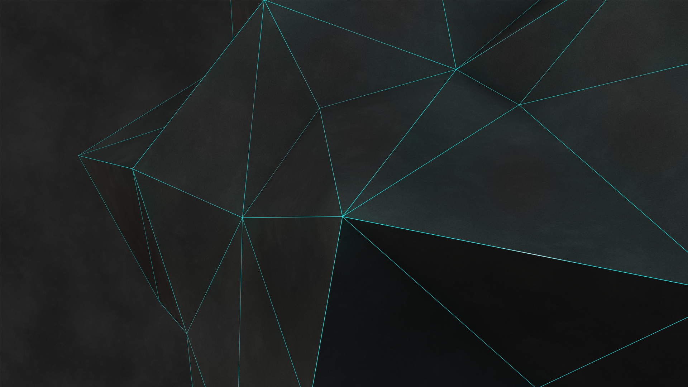

Origami Instructions and Diagrams
Step by step diagrams are probably the most popular and easiest to follow way to show how to fold things out of paper. Trying to find good origami instructions on the internet can be a lot of work though. To help your search we've put together thr largest database of free origami diagrams anywhere on the internet.

Interesting content about the Camels:
Camels have three sets of eyelids and two rows of eyelashes to keep sand out of their eyes.
Camels have thick lips which let them forage for thorny plants other animals can't eat.

Interesting content about the CHAMELEONS:
Almost half of all known Species live in Madagascar.
Chameleons vary widely in terms of size.

Interesting content about the Cicadas:
Cicadas can survive a huge fall as babies, or nymphs.
The loud whirring or buzzing sound you hear is an all-male cicada chorus.

Interesting content about the Pandas:
They have great camouflage for their environment.
Their eyes are different to normal bears.

Interesting content about the Pigeons:
Pigeons are incredibly complex and intelligent animals.
Pigeons are renowned for their outstanding navigational abilities.